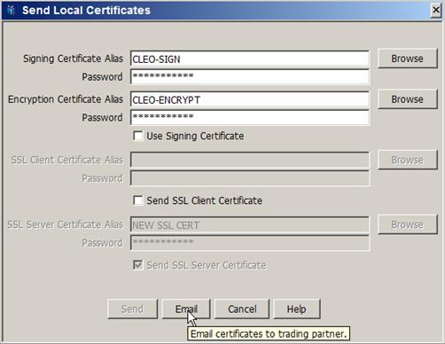
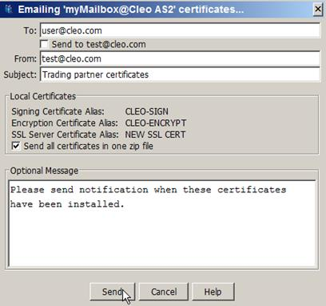
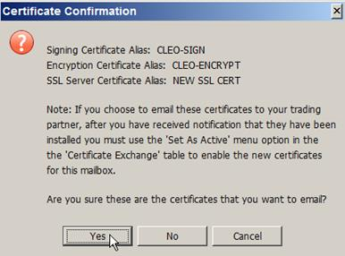
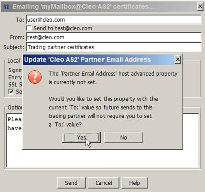
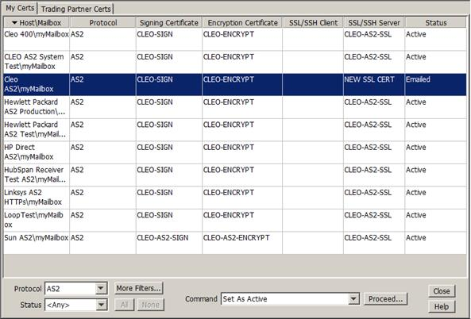
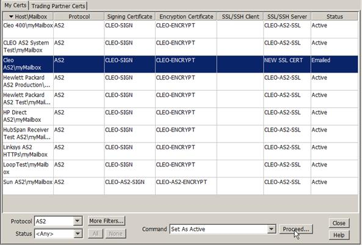

| Certificate Management / Exchanging Certificates with Your Trading Partner | |
The Certificate Exchange Dialog can also be used to exchange certificates with non-CEM capable trading partners (that is, for protocols other than AS2-CEM) or when setting up initial trading partner relationships by sending the certificates via email.
Select the appropriate certificate(s) to send to your trading partner just as you would do when sending certificates to your CEM-capable trading partners, but click Email instead.

The following dialog is displayed. See Email Profile to Your Trading Partner for more information.

When you click Send, the following confirmation dialog is displayed allowing verification of the new certificates before sending them to your trading partner:

Additionally, if the Partner's Email Address is not currently set in the Host's Advanced Panel, the following prompt is displayed, allowing you to update that property with the currently defined 'To:' email address:

Once the certificates have been successfully sent, the status of certificates in the My Certs panel is set to Emailed.

After you have received notification that your trading partner has verified and installed your new certificates, they should manually be activated by selecting the trading partner’s record in the My Certs panel, choosing the Set As Active command option and then clicking Proceed...:
